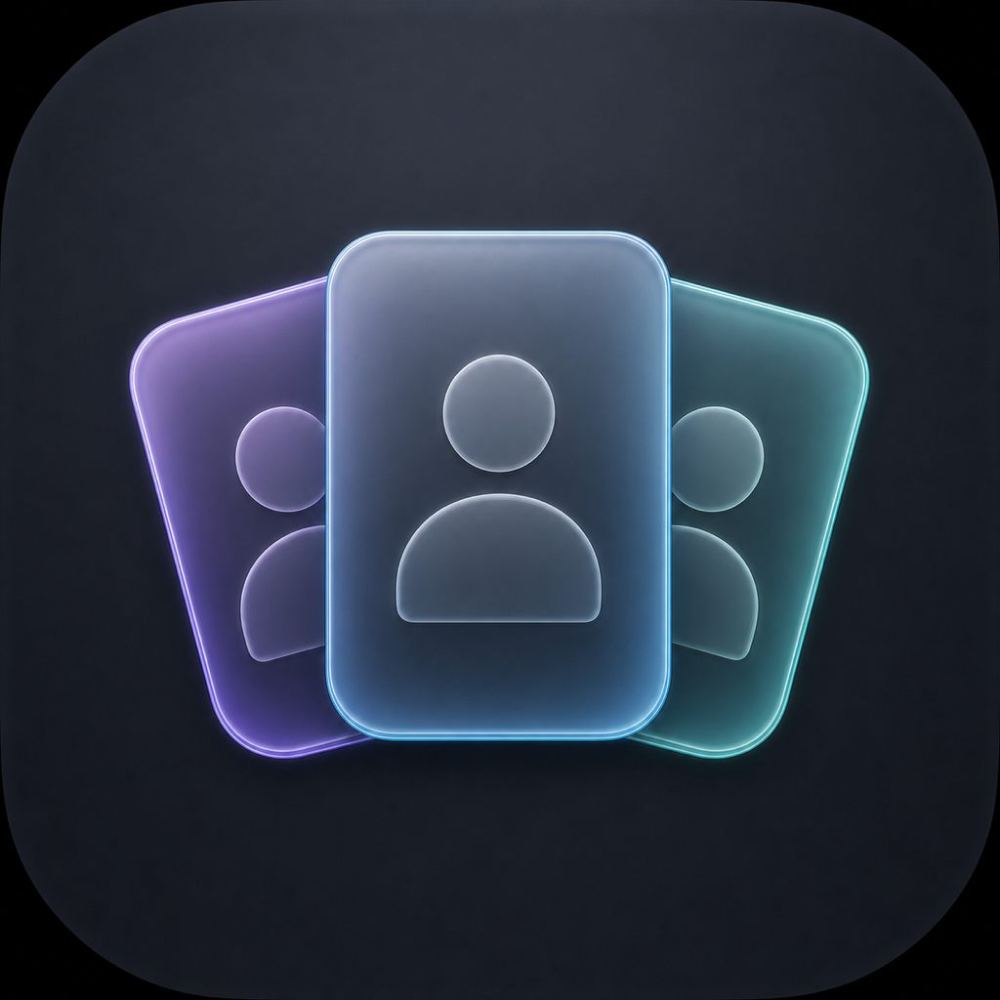

Separate sessions
Every profile runs in isolation—no account state or history is shared.

AgentDock DownloadNative profiles for macOS
Run separate Codex and Claude Desktop profiles without mixing accounts, sessions, settings, or local data.
Isolated environment for personal work. Accounts, sessions, settings, and local data stay separate.
Product story
Each profile gets its own account state, sessions, settings, MCP configuration, local storage, and app launcher.
Every profile runs in isolation—no account state or history is shared.
Each profile keeps a native launcher without changing its identity or data.
Supported local conversations stay tied to the right provider and profile.
Local-first & security
Profiles, sessions, transcripts, and configuration stay on your Mac. AgentDock validates ownership, paths, signatures, and process identity before it acts.
Read the security modelNo sign-up, sync layer, or remote profile storage. Managed data stays on your Mac.
AgentDock verifies file ownership and managed markers before destructive actions.
Filesystem work is constrained to validated roots and rejects symlink escapes.
Release artifacts are signed, notarized, stapled, and verified before installation.
Ready when you are
AgentDock is a native macOS app for local Codex and Claude Desktop profiles.
Download for macOS View releases